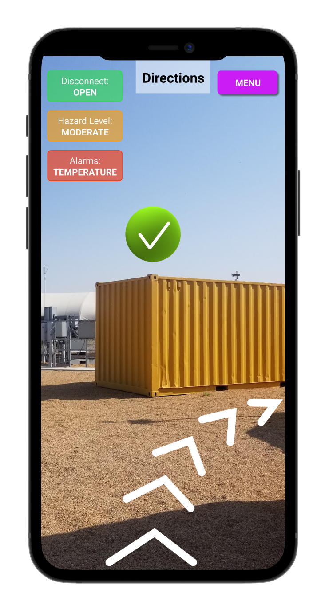
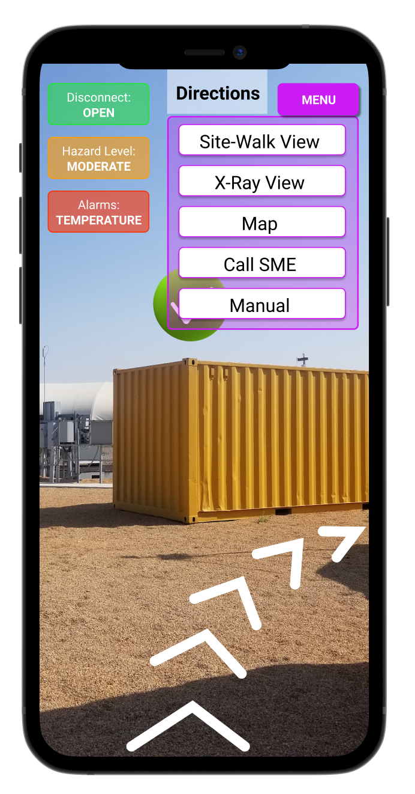
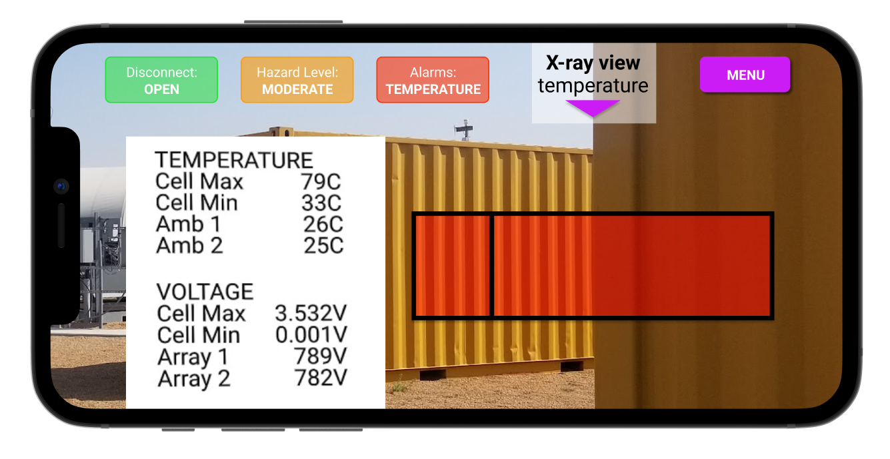
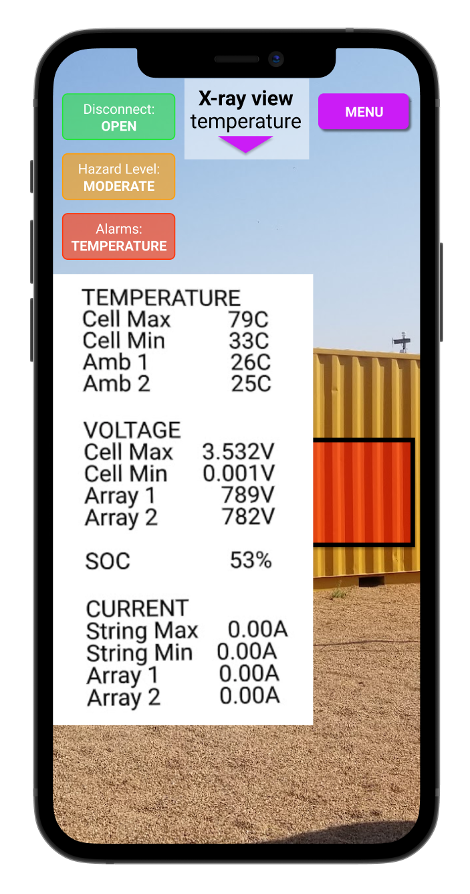
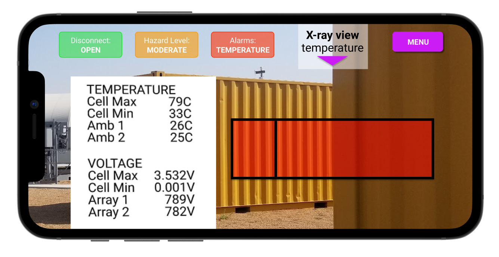
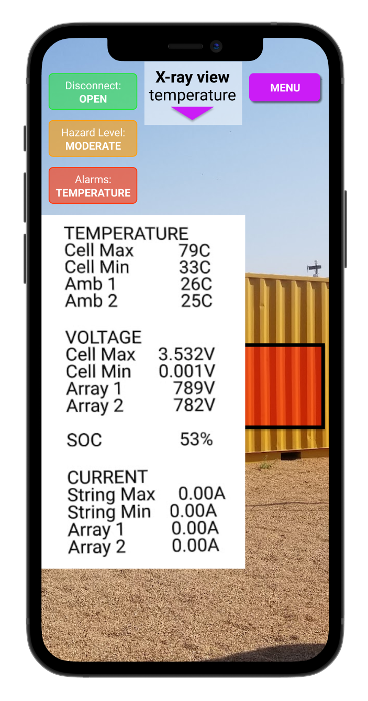
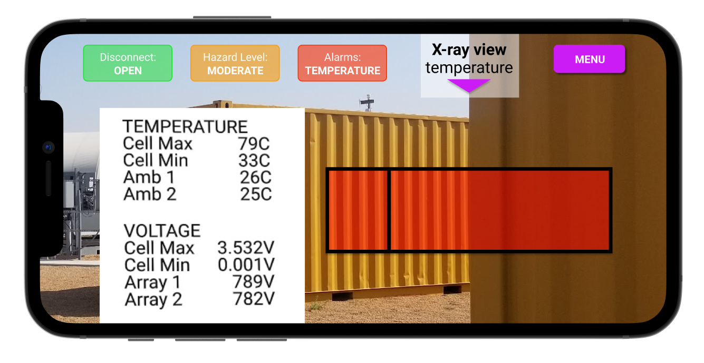
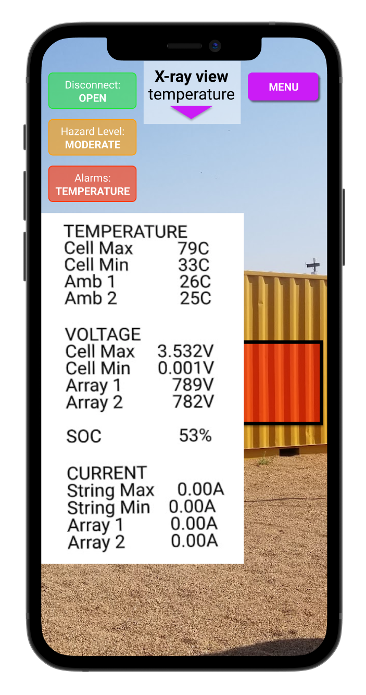

Client: The Electric Power Research Institute (EPRI),
an international nonprofit for the electricity sector
Duration: 12 weeks
The Problem
Solar and electric energy has to be stored in batteries.
Usually, this is done by stacking batteries in shipping containers, called enclosures.
Recently, there have been several serious fires at energy storage facilities.
To reduce the danger to maintanence and operations workers at energy storage facilities,
EPRI wants to design and prototype an augmented reality application
to visually communicate safety-relevant data to on-site operators.
Research
I led ideation and co-design sessions with my team and representatives from the client organization.
We defined overarching goals for the project and laid out scenarios where the app would be used.
Based on the made some sketches.
[add sketches]
Then I made a storyboard for one of the scenarios with low fidelity wireframes of the app.
We went on a site visit to a solar energy storage research facility in eastern Colorado
where I took photos and videos and learned about the site and the operators who would use the app.
Then I made high-fidelity wireframes and developed a prototype using A-Frame and ar.js.
We went on a second site visit to test the prototype and made adjustments,
like giving the text a background color so it can be seen in both light and dark conditions.




 


